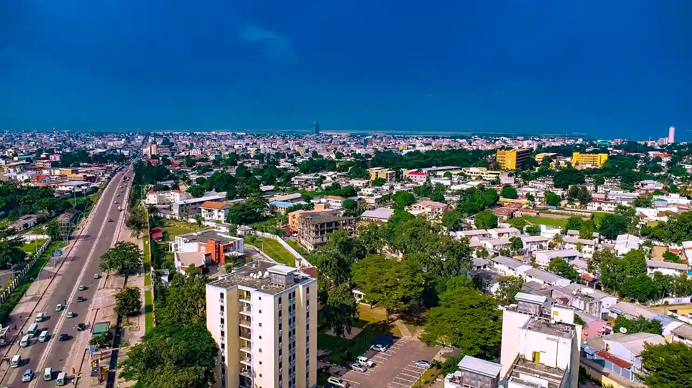

Le petit village de Mfoa prenant de l'importance avec l'implantation d'une mission par les spiritains, il est érigé, en 1911 par l'administration coloniale, en commune de Brazzaville.
Elle tire son nom de l'explorateur italo-français Pierre Savorgnan de Brazza. Une première mairie est bâtie en 1912 qui sera remplacée en 1962-1963 par l'hôtel de ville actuel[N1]. Son premier plan d'urbanisme cohérent date de 1929 sous le gouverneur général Antonetti.
